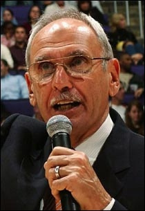
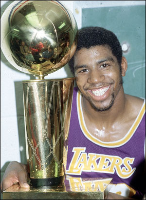
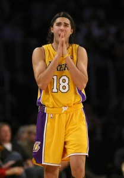
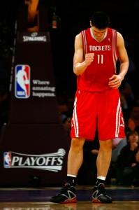

Inner text: 


		
		
		
	

		
	Exactly
how insane is the brain of the ultimate Laker fan during such a
devastating loss?  So deranged, that I find myself having to steal
a quote from Clippers’ announcer Ralph Lawler - “Fasten your seat
belts!”
I'm So Distraught After the Lakers Loss, I'm Stealing Quotes From Ralph Lawler
The nerves in my brain fire semi-related events.  I flash back
to the 1980 NBA Finals.  Magic’s rookie year, and he leads his
team to a championship.  He wouldn’t have stood for this.  I
flash to the future, and Lebron retires with 2 MVPs and 4 rings, one
more than Kobe.  It’s Durant’s league now.
I start to panic.  These Rockets are sticky.  Their
defense is only matched by the quickness of Aaron Brooks.  Derek
Fisher is helpless again, eating layups from a young guard that drops
19 points on him.  Is that Jordan Farmar on the court?  Wow,
he made a three-pointer.  Oh no, we’re still down.
I'm Going to Fire Up My Time Machine and Bring in Rookie Magic to Run the Point, Be Right Back
Yao Ming’s production = the sum of Gasol’s and Bynum’s
production.  We are dead meat if that keeps happening.  I
wonder if Kareem would meet me for lunch over this.  Maybe he
could teach me to be more calm.  When is Bill Walton’s kid going
to play again?  You know, that curly haired slow guy that passed
the ball well.
If Sasha Vujacic overreacts to one more foul, I’m going to eat my fist.
According to Sasha, He Never Committed a Foul in his Life 
Then, hope started to settle in.  Game 7 is in Los
Angeles.  The Rockets still have to go through Los Angeles
(assuming the Lakers actually win enough games to get to a game
7).  Pau Gasol went 6-14 for 14 points.  That won’t happen
again.  The Lakers shot 2-18 from 3-point range (11%!).  That
won’t happen again.
Kobe went absolutely off in the 2nd half to finish with 32 points, 8
rebounds, and 4 assists.  But it didn’t matter.  He had no
real help behind him.  He didn’t get to the line enough.
Phil Jackson needs to hit the tape room with his team.  Draw
fouls, post up Gasol more, make Bynum run a mile for every dumb foul he
keeps committing early in the game.  Anything to avoid another
performance like this.
Yao Ming is a 7 Foot 6 Miracle
When Yao Ming bumped knees with Kobe, he got halfway to the locker
room before turning right back around to play.  These Rockets want
to win, badly.  The Lakers didn’t look like they did in game 1.
Yes, I bleed purple and gold.  But I root for Yao Ming’s
health, and his heart of a champion.  I realize the Rockets are
probably the best defensive team left in the playoffs.  I hope for
a great series.  Only not like this.  My script said the
Lakers win.  If I’m used to one thing in Hollywood, it’s
rewrites.  I’m just not ready for the script to be rejected.
	
	
	

	


Formatted text: 


Exactly
how insane is the brain of the ultimate Laker fan during such a

devastating loss? So deranged, that I find myself having to steal

a quote from Clippers’ announcer Ralph Lawler - “Fasten your seat

belts!”

I'm So Distraught After the Lakers Loss, I'm Stealing Quotes From Ralph Lawler

The nerves in my brain fire semi-related events. I flash back

to the 1980 NBA Finals. Magic’s rookie year, and he leads his

team to a championship. He wouldn’t have stood for this. I

flash to the future, and Lebron retires with 2 MVPs and 4 rings, one

more than Kobe. It’s Durant’s league now.

I start to panic. These Rockets are sticky. Their

defense is only matched by the quickness of Aaron Brooks. Derek

Fisher is helpless again, eating layups from a young guard that drops

19 points on him. Is that Jordan Farmar on the court? Wow,

he made a three-pointer. Oh no, we’re still down.

I'm Going to Fire Up My Time Machine and Bring in Rookie Magic to Run the Point, Be Right Back

Yao Ming’s production = the sum of Gasol’s and Bynum’s

production. We are dead meat if that keeps happening. I

wonder if Kareem would meet me for lunch over this. Maybe he

could teach me to be more calm. When is Bill Walton’s kid going

to play again? You know, that curly haired slow guy that passed

the ball well.

If Sasha Vujacic overreacts to one more foul, I’m going to eat my fist.

According to Sasha, He Never Committed a Foul in his Life 

Then, hope started to settle in. Game 7 is in Los

Angeles. The Rockets still have to go through Los Angeles

(assuming the Lakers actually win enough games to get to a game

7). Pau Gasol went 6-14 for 14 points. That won’t happen

again. The Lakers shot 2-18 from 3-point range (11%!). That

won’t happen again.

Kobe went absolutely off in the 2nd half to finish with 32 points, 8

rebounds, and 4 assists. But it didn’t matter. He had no

real help behind him. He didn’t get to the line enough.

Phil Jackson needs to hit the tape room with his team. Draw

fouls, post up Gasol more, make Bynum run a mile for every dumb foul he

keeps committing early in the game. Anything to avoid another

performance like this.

Yao Ming is a 7 Foot 6 Miracle

When Yao Ming bumped knees with Kobe, he got halfway to the locker

room before turning right back around to play. These Rockets want

to win, badly. The Lakers didn’t look like they did in game 1.

Yes, I bleed purple and gold. But I root for Yao Ming’s

health, and his heart of a champion. I realize the Rockets are

probably the best defensive team left in the playoffs. I hope for

a great series. Only not like this. My script said the

Lakers win. If I’m used to one thing in Hollywood, it’s

rewrites. I’m just not ready for the script to be rejected.

	

	

	


	


HTML: 

<div class="box post">

		
		
		
	

		
	<p>Exactly
how insane is the brain of the ultimate Laker fan during such a
devastating loss?&nbsp; So deranged, that I find myself having to steal
a quote from Clippers’ announcer Ralph Lawler - “Fasten your seat
belts!”</p>
<div class="wp-caption alignnone" id="attachment_953"><a href="http://files.lakerhead.com/2009/05/lawler.jpg"></a><p class="wp-caption-text">I'm So Distraught After the Lakers Loss, I'm Stealing Quotes From Ralph Lawler</p></div>
<p>The nerves in my brain fire semi-related events.&nbsp; I flash back
to the 1980 NBA Finals.&nbsp; Magic’s rookie year, and he leads his
team to a championship.&nbsp; He wouldn’t have stood for this.&nbsp; I
flash to the future, and Lebron retires with 2 MVPs and 4 rings, one
more than Kobe.&nbsp; It’s Durant’s league now.</p>
<p>I start to panic.&nbsp; These Rockets are sticky.&nbsp; Their
defense is only matched by the quickness of Aaron Brooks.&nbsp; Derek
Fisher is helpless again, eating layups from a young guard that drops
19 points on him.&nbsp; Is that Jordan Farmar on the court?&nbsp; Wow,
he made a three-pointer.&nbsp; Oh no, we’re still down.</p>
<div class="wp-caption alignnone" id="attachment_955"><a href="http://files.lakerhead.com/2009/05/magic.jpg"></a><p class="wp-caption-text">I'm Going to Fire Up My Time Machine and Bring in Rookie Magic to Run the Point, Be Right Back</p></div>
<p>Yao Ming’s production = the sum of Gasol’s and Bynum’s
production.&nbsp; We are dead meat if that keeps happening.&nbsp; I
wonder if Kareem would meet me for lunch over this.&nbsp; Maybe he
could teach me to be more calm.&nbsp; When is Bill Walton’s kid going
to play again?&nbsp; You know, that curly haired slow guy that passed
the ball well.</p>
<p>If Sasha Vujacic overreacts to one more foul, I’m going to eat my fist.</p>
<div class="wp-caption alignnone" id="attachment_958"><a href="http://files.lakerhead.com/2009/05/sashafoul.jpg"></a><p class="wp-caption-text">According to Sasha, He Never Committed a Foul in his Life </p></div>
<p>Then, hope started to settle in.&nbsp; Game 7 is in Los
Angeles.&nbsp; The Rockets still have to go through Los Angeles
(assuming the Lakers actually win enough games to get to a game
7).&nbsp; Pau Gasol went 6-14 for 14 points.&nbsp; That won’t happen
again.&nbsp; The Lakers shot 2-18 from 3-point range (11%!).&nbsp; That
won’t happen again.</p>
<p>Kobe went absolutely off in the 2nd half to finish with 32 points, 8
rebounds, and 4 assists.&nbsp; But it didn’t matter.&nbsp; He had no
real help behind him.&nbsp; He didn’t get to the line enough.</p>
<p>Phil Jackson needs to hit the tape room with his team.&nbsp; Draw
fouls, post up Gasol more, make Bynum run a mile for every dumb foul he
keeps committing early in the game.&nbsp; Anything to avoid another
performance like this.</p>
<div class="wp-caption alignnone" id="attachment_957"><p class="wp-caption-text">Yao Ming is a 7 Foot 6 Miracle</p></div>
<p>When Yao Ming bumped knees with Kobe, he got halfway to the locker
room before turning right back around to play.&nbsp; These Rockets want
to win, badly.&nbsp; The Lakers didn’t look like they did in game 1.</p>
<p>Yes, I bleed purple and gold.&nbsp; But I root for Yao Ming’s
health, and his heart of a champion.&nbsp; I realize the Rockets are
probably the best defensive team left in the playoffs.&nbsp; I hope for
a great series.&nbsp; Only not like this.&nbsp; My script said the
Lakers win.&nbsp; If I’m used to one thing in Hollywood, it’s
rewrites.&nbsp; I’m just not ready for the script to be rejected.</p>
	
	
	<!--
	<rdf:RDF xmlns:rdf="http://www.w3.org/1999/02/22-rdf-syntax-ns#"
				xmlns:dc="http://purl.org/dc/elements/1.1/"
				xmlns:trackback="http://madskills.com/public/xml/rss/module/trackback/">
			<rdf:Description rdf:about="http://lakerhead.com/2009/05/04/yao-ming-shows-heart-of-a-champion-rockets-take-game-1/"
    dc:identifier="http://lakerhead.com/2009/05/04/yao-ming-shows-heart-of-a-champion-rockets-take-game-1/"
    dc:title="Rockets Take Game 1, Yours Truly Loses It"
    trackback:ping="http://lakerhead.com/2009/05/04/yao-ming-shows-heart-of-a-champion-rockets-take-game-1/trackback/" />
</rdf:RDF>	-->

	<hr />

</div>